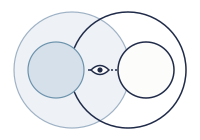
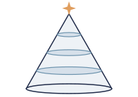
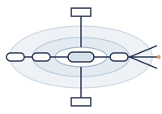
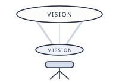

CAREER DESIGN CANVASキャリアデザインキャンバス
( INFO )無料相談（オンライン60分）を受け付けています( CONCEPT )
「何者か」になるより、
あなたの「色」で生きる。
なんかうまくいかない。悪くはないけれど、何か違う。
示された「正解」に向かって、一生懸命頑張ってきた。
それなのに、ふとした瞬間に「このままでいいのかな」と思う。
その迷いは、あなたの内側に
「本当はこうありたい」という願いがあるから生まれるもの。
重要なことを、大切に扱うキャリア支援。
転職するかどうかを決める前に、あなたが本当に満たしたいものを、
潜在意識まで含めて一緒に描きます。

DAY1
悩みの根源がわかる

DAY2
本当に大事にしたいものがわかる

DAY3
うまくいくパターンが手に入る

DAY4
キャリアの羅針盤が手に入る
( CDC )
対話、そして図解。
Career Design Canvas は、自分の軸をつくるところから、転職、そして入社後の活躍までを伴走するキャリア支援です。
入口は、求人紹介ではなく「聴くこと」から。
まずモヤモヤを、あるがままに聴くことから始めます。
診断ではなく、自分の手で構造化する。
固定観念・欲求・得意の仕組みを、潜在意識まで含めて図に描き、編集できる地図として持ち帰ります。
転職支援は、自己理解の後についてくる。
羅針盤ができてから、キャリアコーチがその先を一緒に描き、会社につなぎます。
( PROGRAM )
Reflect · Re-Sketch · Realize
CDCは、キャンバスに絵を描くように、
キャリアを描き直すプログラムです。
3つの言葉は、その描き方の順番です。
いまの自分を見つめる
01
Reflect
リフレクト ／ 映す・見つめる
探求・観察・深く潜る
いまのキャンバスに何が描かれているかを、鏡に映すように見つめます。悩みの根っこや、望まない現実が起こる仕組みを知る段階です。
線を描き直す
02
Re-Sketch
リスケッチ ／ 下書きを描き直す
大事にしたいものを見つける
人生を丁寧に振り返り、本当に大事にしたいことと、自分らしく活躍できる形を見つけて、下書きを描き直します。
点を置いて、かたちにする
03
Realize
リアライズ ／ 気づく・かたちにする
キャリアを実現する
描いたものを統合して「気づき」に変え、キャリアとして現実のかたちにします。Realize には「気づく」と「実現する」の二つの意味を込めています。
入口
ReflectDAY1
Re-SketchDAY2・3
RealizeDAY4
RealizeDAY5
入社後
宮﨑 洋キャリアコーチ
石倉 達也ビジョンデザイン
あなた
聴いてもらう
選び、語る
立ち上がる
キャリアカウンセリング
60分・無料・オンライン｜宮﨑 洋
いまのモヤモヤを、あるがままに伺います。求人を紹介する場ではありません。CDCが合うかどうかを、一緒に確かめます。
いまのあなたに必要なことが見える
無意識下の構造を知る
何に、今詰まっているのか？
最近「不本意だな」と感じた出来事をひとつ手がかりに、世界の見え方の手前にある前提を、段階を追って掘り下げます。
悩みの根源がわかる
人生を丁寧に振り返る
なぜ、それをするのか？
幼いころの遊び、逆境の乗り越え方、自分なりのルールから「欲求のかけら」を集め、4つの層に整理します。
本当に大事にしたいものがわかる
活躍のシナリオ・特性を理解する
どう、自分の力はうまく流れるのか？
「もう一度やってみたい」経験を2つ分解して、きっかけ・取り込む情報・考え方と行動のパターン・生まれる成果という、得意の仕組みを図にします。
うまくいくパターンが手に入る
統合・編集し、TOBEマップへ
どこから来て、どこへ向かうのか？
3回分の図を一枚の地図に統合し、ビジョンを言葉にします。迷ったときに立ち返る「自分らしさの羅針盤」をつくります。
キャリアの羅針盤が手に入る
キャリアに落とし込む
約90分｜石倉 達也・宮﨑 洋
羅針盤をもとに、その先を二人で一緒に描きます。転職も、満たしたいものを満たす方法の一つとして考えます。まずは自分の力で試せる、現実の一歩を用意します。
次の一歩が見える
入社後の継続コーチング
ご希望の方に｜入社後1か月・3か月・6か月
入社後の半年は、新しい場で立ち上がる大事な期間です。3回のコーチングで、羅針盤と照らし合わせて振り返ります。
会社で活躍するまで、伴走が続く
※ DAY1〜4 は各回約2時間・オンライン（Zoom）・1対1。約1か月で進みます。
※ 料金は 165,000円（税込）。入口のキャリアカウンセリングから DAY1〜5 までを含みます。
※ 入社後の継続コーチングの料金：［ ］
※ お支払いは銀行振込（一括または2回払い）。途中でおやめになる場合は、受けたセッションの分で精算します。
( JOURNEY )
霧の中から、
晴れ渡る空へ。
CDC 一般的な転職エージェント
01
内省の扉を開く
入口のカウンセリング
CDC未来への期待 → 固定観念に気づく
一般的な転職エージェント条件だけ聞かれる違和感
02
発見・エネルギーに気づく
DAY1〜4 約1か月（CDCだけ）
CDC自分の言葉という一致感 → 意志を持って選ぶ
一般的な転職エージェント選択を迫られる迷い
03
社会に試す・つながり直す
DAY5 キャリアに落とし込む
CDC自分の物語を語る自信 → 根拠のある落ち着き
一般的な転職エージェント他人の言葉という違和感 → 想定問答止まりの不安
04
見たい世界をクリエイトする
継続コーチング（CDCだけ）
CDC志を試すワクワク → 新たな未来を築く
一般的な転職エージェント消えない迷い → 支援終了
( DIFFERENCE )
転職エージェントと、
ここが違う。
| 一般的な転職エージェント | Career Design Canvas | |
|---|---|---|
| 仕組み | 企業から報酬を受け取る | あなたから対価をいただき、あなたの方を向く。 |
| 面談 | 経歴や希望条件を聞かれる | まず、いまのモヤモヤを聴いてもらう。 |
| アプローチする深さ | 条件が中心 | 潜在意識まで扱い、自分の全体を見る。 |
| 軸の形成 CDCだけ | この段階がない | 約1か月で、自分の軸を図にする。 DAY1 悩みの根源がわかる DAY2 本当に大事にしたいものがわかる DAY3 うまくいくパターンが手に入る DAY4 キャリアの羅針盤が手に入る |
| 求人・書類・面接 | 手持ちの求人と、想定問答の練習 | 自分の軸で選び、自分の言葉で語る。 |
| 内定後 CDCだけ | そこで関係が終わる | 入社後1か月・3か月・6か月に、コーチングで振り返る。 |
( PROFILE )
あなたを、
当たり前に
大切にしたい。
キャリアはあなたの命の使い方であり、どこで誰と何をするかは、人生に深く影響する意思決定です。それを大切に扱う。当たり前のことを、当たり前にやる。それが今の業界では当たり前ではない。だからこそ、このサービスを創りました。
( Career coach )
宮﨑 洋 Hiroshi Miyazaki
株式会社HotSpring 代表／キャリアコーチ。外資系医療機器メーカーに17年間在籍し、マーケティング、経営企画、DX推進、企業変革を担う。コーチングと出会いプロコーチとして独立。約5年間、人材紹介の現場に携わる。キャリアコンサルタント（国家資格）／GCS認定プロフェッショナルコーチ。
「正解」の中に、自分はいなかった。違っていて、いい。


( Vision design )
石倉 達也 Tatsuya Ishikura
VISIONARY CANVAS 代表。静岡文化芸術大学で文化政策を学ぶ。島根県庁、農業の現場、NPO での活動を経て、VISIONARY CANVAS を立ち上げる。思考の癖を対話で見つけ、図にして手渡すセッションを行っている。
( FAQ )
よくある質問
転職するか決めていなくても、相談できますか？
はい。決めていなくて大丈夫です。今の会社にとどまる、副業を始める、異動するなど、転職しない結論もあります。
オンラインで受けられますか？
はい。すべてオンライン（Zoom）で行います。
「治療」を目的としたカウンセリングですか？
いいえ。CDCはキャリアのためのコーチングとカウンセリングです。心身の不調で治療や休養が必要な方は、医療機関や専門の相談窓口をご利用ください。
( FREE CONSULTATION )
まずは、いまの
モヤモヤを
聴かせてください。
TIME60分
STYLEオンライン（Zoom）
FEE無料
COACH宮﨑 洋
宮﨑が、オンラインで60分、フラットにお話を伺います。求人を紹介する場ではありません。CDCを無理にお勧めすることもありません。CDCが合うかどうかも、そこで一緒に確かめましょう。
予約ページで、空いている日時からお選びいただけます